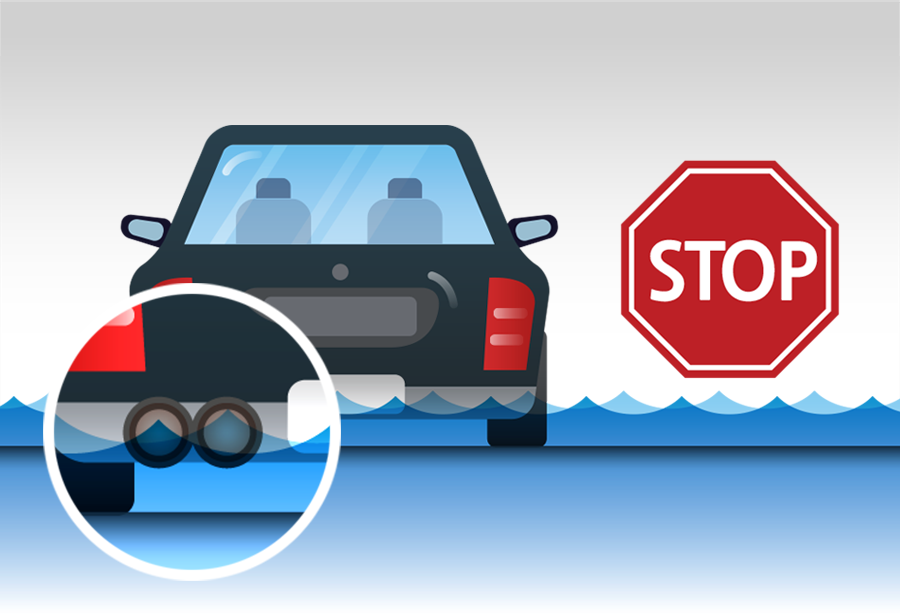

폭우가 아니라도, 비가 내릴 때는 전조등을 켜고 저속 운행하며 브레이크를 가볍게 자주 밟아줍니다.
빗길에서는 브레이크 패드와 라이닝 사이에 물이 들어가 제동력이 떨어지므로 브레이크를 여러 번 밟아 말려주어야 합니다.
가능한 안쪽 차선을 이용합니다. 도로 구조상 물은 양쪽 가장자리로 흘러가게 되어 있으므로, 바깥쪽 차선에 물웅덩이가 생기게 됩니다.
일시적인 폭우라도 순식간에 물이 불어나 돌발홍수가 일어나기도 합니다. 물이 고인 곳을 지나갈 수밖에 없다면, 에어컨을 끄고 20km/h 이하로 브레이크를 밟지 않고 한번에 지나가야 합니다.
중간에 브레이크를 밟거나 기어를 바꾸면 머플러에 물이 들어가 엔진이 멈추게 되고, 빨리 지나가려고 속력을 내면 물보라가 일어 차량에 치명적입니다.
물웅덩이를 빠져 나온 후에는 주행하면서 브레이크를 살짝 여러 번 밟아 라이닝을 건조시킵니다.

앞차의 배기구가 물에 잠겼다면 운행을 멈추거나 다른 길로 가야 합니다. 배기구가 물에 잠기면 엔진 계통으로 물이 들어가 시동이 꺼지고, 다시 시동을 걸려고 하면 추후 수리가 불가능할 정도로 손상만 커집니다.
운행이 불가능할 때는 차를 세워두고 사람은 근처 건물이나 고지대로 대피해야 합니다.
물이 계속 불어나며 차가 떠밀리고 있다면 뛰쳐나오지 말고 시동을 끈 채 차 안에 머무릅니다. 차 안에도 물이 차오르면 지붕 위로 올라갑니다.